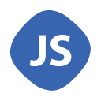
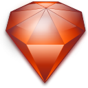

Fundamentos de las tecnologías
-
HTML 5 
- HTML, sigla en inglés de HyperText Markup Language (lenguaje de marcas de hipertexto), hace referencia al lenguaje de marcado para la elaboración de páginas web. Es un estándar que sirve de referencia del software que conecta con la elaboración de páginas web en sus diferentes versiones, define una estructura básica y un código (denominado código HTML) para la definición de contenido de una página web, como texto, imágenes, videos, juegos, entre otros.
-
PHP 7 
- PHP es un lenguaje de programación de uso general de código del lado del servidor originalmente diseñado para el desarrollo web de contenido dinámico. Fue uno de los primeros lenguajes de programación del lado del servidor que se podían incorporar directamente en el documento HTML en lugar de llamar a un archivo externo que procese los datos. El código es interpretado por un servidor web con un módulo de procesador de PHP que genera la página web resultante.
-
CSS 3 
- Hojas de Estilo en Cascada (Cascading Style Sheets) es el lenguaje utilizado para describir la presentación de documentos HTML o XML, esto incluye varios lenguajes basados en XML como son XHTML o SVG. CSS describe como debe ser renderizado el elemento estructurado en pantalla, en papel, hablado o en otros medios. CSS es uno de los lenguajes base de la Open Web y posee una especificación estandarizada por parte del W3C. Desarrollado en niveles, CSS1 es ahora obsoleto, CSS2.1 es una recomendación y CSS3, ahora dividido en módulos más pequeños, está progresando en camino al estándar.
-
Java Script 
- JavaScript (abreviado comúnmente JS) es un lenguaje de programación interpretado, dialecto del estándar ECMAScript. Se define como orientado a objetos,3 basado en prototipos, imperativo, débilmente tipado y dinámico.
Se utiliza principalmente en su forma del lado del cliente (client-side), implementado como parte de un navegador web permitiendo mejoras en la interfaz de usuario y páginas web dinámicas4 aunque existe una forma de JavaScript del lado del servidor(Server-side JavaScript o SSJS).
-
Ruby 
- Ruby es un lenguaje de programación interpretado, reflexivo y orientado a objetos, creado por el programador japonés Yukihiro "Matz" Matsumoto, quien comenzó a trabajar en Ruby en 1993, y lo presentó públicamente en 1995. Combina una sintaxis inspirada en Python y Perl con características de programación orientada a objetos similares a Smalltalk.
-
Python 
- Python es un lenguaje de programación interpretado cuya filosofía hace hincapié en una sintaxis que favorezca un código legible.
Se trata de un lenguaje de programación multiparadigma, ya que soporta orientación a objetos, programación imperativa y, en menor medida, programación funcional. Es un lenguaje interpretado, usa tipado dinámico y es multiplataforma.
-
Angular 
- AngularJS (comunalmente llamado "Angular" o "Angular.js"), es un framework de JavaScript de código abierto, mantenido por Google, que se utiliza para crear y mantener aplicaciones web de una sola página. Su objetivo es aumentar las aplicaciones basadas en navegador con capacidad de Modelo Vista Controlador (MVC), en un esfuerzo para hacer que el desarrollo y las pruebas sean más fáciles.